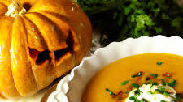

Essa receita é uma torta com camadas de cremes de abóbora e ricota.
Creme de Abóbora
Bata 400g de abóbora cozida fria
Creme de Ricota
2 ovos
Bata 500g de ricota
100g de açúcar
1 colher de chá de essência de baunilha
30g de amido de milho
80ml de leite por 5 minutos

Montagem
Em uma forma de 23 cm, alterne colheres de sopa dos dois cremes até acabarem.
Asse em forno preaquecido a 180°C por 1 hora ou até firmar. Deixe esfriar antes de servir.
Tutorial para fazer Empada
Ingredientes
500 g de farinha de trigo
1 xícara de chá de manteiga
1 ovo
1/2 colher de sopa de sal
2 colheres de sopa de água gelada
Farinha de trigo para polvilhar
Manteiga para untar
Recheio
500 g de peito de frango cozido e desfiado
1 cebola média picada
1 colher (sobremesa) de pimentão verde picado
1 lata de ervilhas
14 azeitonas verdes sem caroço
1 e 1/2 colheres (sopa) de farinha de trigo
2 tomates grandes picados
2 dentes de alho picado
1 colher (sopa) de azeite
Salsinha picada a gosto
250 ml de leite
2 gemas para pincelar
Modo de preparo
Em um recipiente, coloque a farinha de trigo, a manteiga, o ovo, o sal e a água e misture até obter uma massa homogênea. Embrulhe com plástico filme e leve à geladeira por 1 hora. Enquanto isso, unte formas para empada com manteiga e reserve. Em seguida, polvilhe uma superfície lisa com farinha de trigo, abra a massa com ajuda de um rolo e divida metade entre as formas. Reserve.